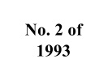

ACTS AMENDMENT (CAKE)
ACT
An ACT to amend certain Acts in consequence of the enactment of theCake Act 1993.
PART 1 - PRELIMINARY
Short Title
- This Act may be cited as the Acts Amendment (Cake Act) 1994.
Commencement
- This Act shall come into operation on the 1 January 1994.
PART 2 - CONSEQUENTIAL AMENDMENTS
- Section 6 of the principal Act is amended -
- by adding the subsection following -
- In the case of more than one employee having an obligation to
provide cake on any one day, the following
caveats apply:
- the approved delegate for the Minister for Cake shall
indicate a new date of cake obligation, so that
only one
employee provides cake on any day; or,
- if authorized by the approved delegate for the Minister for
Cake, there can be provision for a 'special
feast day' whereby a
co-ordinated provision of cake and cake substitute is allowed.